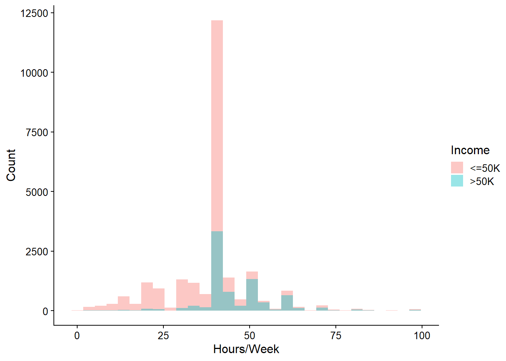

# Read train data
train_data <- read.csv("C:/Users/User/Desktop/Logistic_Regression_ADULT/Data/adult.data", header = FALSE, sep = ",", strip.white = TRUE, stringsAsFactors = TRUE)
# Name columns
names(train_data) <- c("age", "workclass", "fnlwgt", "education", "education_num", "marital_status", "occupation", "relationship", "race", "sex", "capital_gain", "capital_loss", "hours_per_week", "native_country", "income")Using logistic regression to predict income levels
Machine Learning
R
Dataset Information
The Adult dataset (Becker and Kohavi 1996), accessible from the UCI Machine Learning Repository, is a sample from the 1994 US census database comprising 15 variables. A description of each variable is given below.
| Variable | Description |
|---|---|
| age | Age |
| workclass | Employment status |
| fnlwgt | Final weight, i.e., the number of people in a given row |
| education | Highest level of education |
| education-num | Highest level of education in numerical form |
| marital_status | Marital status |
| occupation | Occupation |
| relationship | Family relationship |
| race | Race |
| sex | Sex/gender |
| capital_gain | Capital gain for an individual |
| capital_loss | Capital loss for an individual |
| hours_per_week | Working hours per week |
| native_country | Country of birth |
| income | Whether an individual makes more than $50,000 annually |
Objective: Use logistic regression to build a model that predicts a person’s income group, categorized as <=50K or >50K.
As we have already downloaded the data, we load it in R using the code below. The dataset consists of two parts: the training set, adult.data, and the test set, adult.test. We start by loading the training set, which is vital for exploration exercises.
Exploratory Data Analysis
Logistic regression makes the following assumptions about the data:
The target variable is binary.
Absence of multicollinearity among the predictor variables.
There are no outliers in the data.
A linear relationship exists between continuous predictors and the logit of the outcome.
We perform exploratory data analysis (EDA) before building the model to check whether the data meets these assumptions. EDA also helps with feature selection and reveals possible relationships between variables.
Task 1: Load required packages.
Task 2: Determine the internal structure of the dataset.
We use the str() function to gain an overview of the dataset. This function provides information on dataset properties like dimension and data types.
str(train_data)'data.frame': 32561 obs. of 15 variables:
$ age : int 39 50 38 53 28 37 49 52 31 42 ...
$ workclass : Factor w/ 9 levels "?","Federal-gov",..: 8 7 5 5 5 5 5 7 5 5 ...
$ fnlwgt : int 77516 83311 215646 234721 338409 284582 160187 209642 45781 159449 ...
$ education : Factor w/ 16 levels "10th","11th",..: 10 10 12 2 10 13 7 12 13 10 ...
$ education_num : int 13 13 9 7 13 14 5 9 14 13 ...
$ marital_status: Factor w/ 7 levels "Divorced","Married-AF-spouse",..: 5 3 1 3 3 3 4 3 5 3 ...
$ occupation : Factor w/ 15 levels "?","Adm-clerical",..: 2 5 7 7 11 5 9 5 11 5 ...
$ relationship : Factor w/ 6 levels "Husband","Not-in-family",..: 2 1 2 1 6 6 2 1 2 1 ...
$ race : Factor w/ 5 levels "Amer-Indian-Eskimo",..: 5 5 5 3 3 5 3 5 5 5 ...
$ sex : Factor w/ 2 levels "Female","Male": 2 2 2 2 1 1 1 2 1 2 ...
$ capital_gain : int 2174 0 0 0 0 0 0 0 14084 5178 ...
$ capital_loss : int 0 0 0 0 0 0 0 0 0 0 ...
$ hours_per_week: int 40 13 40 40 40 40 16 45 50 40 ...
$ native_country: Factor w/ 42 levels "?","Cambodia",..: 40 40 40 40 6 40 24 40 40 40 ...
$ income : Factor w/ 2 levels "<=50K",">50K": 1 1 1 1 1 1 1 2 2 2 ...The output from str() shows that the training dataset has 32,561 observations and 15 variables. Our target variable is income, which has two categories <=50K and >50K. Therefore, we can use logistic regression to build a binary classification model.
We also notice that the factor variables workclass, occupation, and native_country include levels denoted by a “?”. Upon examining the Variables Table provided at the UCI Machine Learning Repository within the Dataset Information section, we find that these columns have missing values. We conclude that the “?” symbol represents missing data.
Task 3: Handle missing data
The presence of missing data in a regression model can significantly impair the model’s accuracy in predicting responses. In this task, we examine the proportion of missing values in the workclass, occupation, and native_country columns of the training data.
# Percentage of missing values in workclass
nrow(train_data[train_data$workclass == '?', ]) * 100/nrow(train_data)[1] 5.638647# Percentage of missing values in occupation
nrow(train_data[train_data$occupation == '?', ]) * 100/nrow(train_data)[1] 5.660146# Percentage of missing values in native_country
nrow(train_data[train_data$native_country == '?', ]) * 100/nrow(train_data)[1] 1.790486We find that the highest percentage of missing values occurs in the workclass and occupation variables, with about 5% of the training data missing in each case. As we’d like to retain these missing values, we recode them as “Missing”, creating an additional category for each variable.
Task 4: Discard zero-variance and near-zero variance independent variables.
A zero-variance variable has only one unique value, while a near-zero-variance variable has very few unique values. These variables are also termed low cardinality variables, where cardinality refers to the number of unique values a variable has. Because they contain little information, they are unimportant to the analysis (Boehmke and Greenwell 2019). We use the nearZeroVar() function from the caret package to identify these variables in the training data.
X = nearZeroVar(train_data, saveMetrics = TRUE)
X freqRatio percentUnique zeroVar nzv
age 1.011261 0.224194589 FALSE FALSE
workclass 8.931917 0.027640429 FALSE FALSE
fnlwgt 1.000000 66.484444581 FALSE FALSE
education 1.440269 0.049138540 FALSE FALSE
education_num 1.440269 0.049138540 FALSE FALSE
marital_status 1.401853 0.021498111 FALSE FALSE
occupation 1.010002 0.046067381 FALSE FALSE
relationship 1.588561 0.018426952 FALSE FALSE
race 8.903969 0.015355794 FALSE FALSE
sex 2.023025 0.006142317 FALSE FALSE
capital_gain 86.020173 0.365467891 FALSE TRUE
capital_loss 153.673267 0.282546605 FALSE TRUE
hours_per_week 5.398013 0.288688922 FALSE FALSE
native_country 45.365474 0.128988667 FALSE TRUE
income 3.152659 0.006142317 FALSE FALSEFrom the above output, the training data has no zero-variance variables but contains several near-zero-variance variables, namely, capital_gain, capital_loss, and native_country. We use histograms to explore capital_gain and capital_loss further.
# Remove scientific notation
options(scipen = 999)
# Histogram of Capital Gain
cg_plot <- ggplot(data = train_data, aes(x = capital_gain)) + geom_histogram(bins = 20) + labs(x = "Capital Gain", y = "Count") + theme(axis.title = element_text(family = "Arial"), plot.title = element_text(family = "Arial")) + theme_minimal_grid(12)
# Histogram of Capital Loss
cl_plot <- ggplot(data = train_data, aes(x = capital_loss)) + geom_histogram(bins = 20) + labs(x = "Capital Loss", y = "Count") + theme(axis.title = element_text(family = "Arial"), plot.title = element_text(family = "Arial")) + theme_minimal_grid(12)
# Use plot_grid() from cowplot to arrange plots on grid
plot_grid(cg_plot, cl_plot, labels = c('A', 'B'), label_size = 12)Figure 1 reveals that the distributions of capital_gain and capital_loss are strongly skewed to the right, with most observations being zero. Therefore, we discard these two variables.
In addition, the frequency distribution of native_country shown below indicates that almost 90% (29170/32561) of all entries fall within the United-States category. Because of this heavy skewness, we exclude this variable from our analysis.
# Frequencies of levels in native_country
summary(train_data$native_country) Missing Cambodia
583 19
Canada China
121 75
Columbia Cuba
59 95
Dominican-Republic Ecuador
70 28
El-Salvador England
106 90
France Germany
29 137
Greece Guatemala
29 64
Haiti Holand-Netherlands
44 1
Honduras Hong
13 20
Hungary India
13 100
Iran Ireland
43 24
Italy Jamaica
73 81
Japan Laos
62 18
Mexico Nicaragua
643 34
Outlying-US(Guam-USVI-etc) Peru
14 31
Philippines Poland
198 60
Portugal Puerto-Rico
37 114
Scotland South
12 80
Taiwan Thailand
51 18
Trinadad&Tobago United-States
19 29170
Vietnam Yugoslavia
67 16 # Drop non-informative columns
train_data$capital_gain <- NULL
train_data$capital_loss <- NULL
train_data$native_country <- NULLTask 5: Discard closely related independent variables.
Two variables are considered collinear when they are so strongly correlated that it is difficult to determine their individual effects on the target variable. When this type of relationship occurs between more than two variables, we refer to it as multicollinearity. In the training dataset, education and education_num are collinear, as education_num is simply a numeric representation of education. The two variables contain the same information, so we discard one, i.e., education_num.
# Drop one of a pair of collinear variables
train_data$education_num <- NULLTask 6: Discard variables that aren’t important to the analysis.
Here, we discard fnlwgt and relationship.
# Drop irrelevant variables
train_data$fnlwgt <- NULL
train_data$relationship <- NULLTask 7: Lump levels of independent categorical features with few observations.
The independent categorical variables in the dataset are workclass, education, marital_status, occupation, race, and sex. We explore each of these variables to determine instances where level lumping can be applied to reduce the noise in the data.
Lump workclass levels
We use a barplot to compare the number of people belonging to each workclass level.
# Barplot of workclass
wc_plot <- ggplot(data = train_data, aes(x = workclass)) + geom_bar(fill="steelblue") + labs(x = "Work Class", y = "Count") + theme(axis.title = element_text(family = "Arial")) + theme_cowplot(12) + coord_flip()
wc_plotFigure 2 shows that the two levels, Without-pay and Never-worked have very few observations. So, we lump them together with the Missing in a level called “Other/Missing”. We also lump State-gov, Local-gov, and Federal-gov into a new level called “Gov,” as they all pertain to government-related work. Self-emp-not-inc and Self-emp-inc are consolidated into a new level called “Self-emp,” as both are related to self-employment.
# Change names of workclass levels
train_data$workclass <- recode(train_data$workclass, "Missing" = "Other/Missing", "Federal-gov" = "Gov", "Local-gov" = "Gov", "Never-worked" = "Other/Missing", "Self-emp-inc" = "Self-emp", "Self-emp-not-inc" = "Self-emp", "State-gov" = "Gov", "Without-pay" = "Other/Missing")
# Check workclass level frequencies
table(train_data$workclass)
Other/Missing Gov Private Self-emp
1857 4351 22696 3657 We want the first (base) level of workclass to be a meaningful quantity that can later help with interpreting regression results. So, we use the relevel() function to reorder these levels, removing “Other/Missing” as the base level.
train_data$workclass <- relevel(train_data$workclass, ref = "Gov")Lump education levels
The barplot in Figure 3 explores the distribution of people by education. Here is the code used to create this plot:
# Barplot of education
ed_plot <- ggplot(data = train_data, aes(x = education)) + geom_bar(fill="steelblue") + labs(x = "Education", y = "Count") + theme(axis.title = element_text(family = "Arial")) + theme_cowplot(12) + coord_flip()
ed_plotWe see that all levels from Preschool to 12th grade have somewhat low frequencies. So, we lump these levels into a new category called Preschool-12th. We also merge Assoc-voc and Assoc-acdm into a single level called Associate, as shown in the code below.
# Recode education levels
train_data$education <- recode(train_data$education, "10th" = "Preschool-12th", "11th" = "Preschool-12th", "12th" = "Preschool-12th", "1st-4th" = "Preschool-12th", "5th-6th" = "Preschool-12th", "7th-8th" = "Preschool-12th", "9th" = "Preschool-12th", "Assoc-acdm" = "Associate", "Assoc-voc" = "Associate", "Preschool" = "Preschool-12th")
table(train_data$education)
Preschool-12th Associate Bachelors Doctorate HS-grad
4253 2449 5355 413 10501
Masters Prof-school Some-college
1723 576 7291 Lump marital_status levels
The barplot in Figure 4 explores the distribution of people by marital_status.
# Barplot of marital_status
ms_plot <- ggplot(data = train_data, aes(x = marital_status)) + geom_bar(fill="steelblue") + labs(x = "Marital Status", y = "Count") + theme(axis.title = element_text(family = "Arial")) + theme_cowplot(12) + coord_flip()
ms_plotWe lump Married-spouse-absent, Married-civ-spouse, and Married-AF-spouse into a level called “Married”, as they all denote married people. By doing so, we reduce the number of levels in this variable to 5.
# Recode marital_status levels
train_data$marital_status <- recode(train_data$marital_status, "Married-AF-spouse" = "Married", "Married-civ-spouse" = "Married", "Married-spouse-absent" = "Married")
table(train_data$marital_status)
Divorced Married Never-married Separated Widowed
4443 15417 10683 1025 993 Lump occupation levels
The barplot in Figure 5 illustrates the counts of people in each level of occupation. Here is the code used to create this plot.
oc_plot <- ggplot(data = train_data, aes(x = occupation)) + geom_bar(fill="steelblue") + labs(x = "Occupation", y = "Count") + theme(axis.title = element_text(family = "Arial")) + theme_cowplot(12) + coord_flip()
oc_plotWe create the following new levels for occupation:
- Service-sales-workers: Protective-serv, Priv-house-serv, Other-service, Sales
- Managers: Exec-managerial
- Professionals: Prof-specialty
- Technical: Tech-support
- Clerical: Adm-clerical
- Labor-trades: Machine-op-inspct, Handlers-cleaners, Farming-fishing, Craft-repair, Transport-moving
- Others: Armed-Forces, Missing
# Recode occupation levels
train_data$occupation <- recode(train_data$occupation, "Protective-serv" = "Service-sales-workers", "Sales" = "Service-sales-workers", "Priv-house-serv" = "Service-sales-workers", "Other-service" = "Service-sales-workers", "Exec-managerial" = "Managers", "Prof-specialty" = "Professionals", "Tech-support" = "Technical", "Adm-clerical" = "Clerical", "Machine-op-inspct" = "Labor-trades", "Handlers-cleaners" = "Labor-trades", "Farming-fishing" = "Labor-trades", "Craft-repair" = "Labor-trades", "Transport-moving" = "Labor-trades", "Armed-Forces" = "Other/Missing", "Missing" = "Other/Missing")
table(train_data$occupation)
Other/Missing Clerical Labor-trades
1852 3770 10062
Managers Service-sales-workers Professionals
4066 7743 4140
Technical
928 We also reorder the levels of occupation so that the first level is Clerical, a more meaningful quantity than Other/Missing.
train_data$occupation <- relevel(train_data$occupation, ref = "Clerical")Lump race levels
The barplot in Figure 6 shows the counts of people by race. Here is the code used to create it:
r_plot <- ggplot(data = train_data, aes(x = race)) + geom_bar(fill="steelblue") + labs(x = "Race", y = "Count") + theme(axis.title = element_text(family = "Arial")) + theme_cowplot(12) + coord_flip()
r_plotWe see that more than 20000 people are white, and the next most populous race is black, with less than 5000 people. To simplify our analysis, we regroup race into two levels, White and Non-white.
# Recode race levels
train_data$race <- recode(train_data$race, "Amer-Indian-Eskimo" = "Non-white", "Asian-Pac-Islander" = "Non-white", "Black" = "Non-white", "Other" = "Non-white")
table(train_data$race)
Non-white White
4745 27816 Lump sex levels
Figure 7 shows the number of people in each level of sex. Here is the code used to create it:
s_plot <- ggplot(data = train_data, aes(x = sex)) + geom_bar(fill="steelblue") + labs(x = "Sex", y = "Count") + theme(axis.title = element_text(family = "Arial")) + theme_cowplot(12) + coord_flip()
s_plotWe see that most people in the data are male. As sex only has two levels, both of which are important to the analysis, we don’t do any lumping here.
Task 8: Study the relationship between income and each of the independent variables.
Before we build our model, we want to see if there are specific differences between people with incomes <=50K and those with incomes >50K. So, we examine the relationship between income and each independent variable.
Income vs. Age
We use a histogram to determine the relationship between age and income.
age_plot <- ggplot(train_data, aes(x = age, fill = income)) +
geom_histogram(position = "identity", alpha = 0.4, bins = 30) + labs(x = "Age", y = "Count", fill = "Income") + theme(axis.title = element_text(family = "Arial")) + theme_cowplot(12)
age_plotFigure 8 shows that more people have incomes of <=50K than of >50K. The minimum age for people with incomes <=50K is slightly less than that for people of the other income group. Also, the distribution of ages in the <=50K group is heavily skewed to the right, suggesting that the mean age of this group is higher than the median age.
Income vs. workclass
Here is the code used to create the proportional stacked barplot in Figure 9, showing the relationship between workclass and income:
wc_plot2 <- ggplot(data = train_data, aes(x = workclass, fill = income)) + geom_bar(position = "fill") + scale_fill_manual(values = c("#f0b27a", "#85c1e9")) + labs(x = "Work Class", y = "Proportion", fill = "Income") + theme(axis.title = element_text(family = "Arial")) + theme_cowplot(12)
wc_plot2From the barplot, we see that the workclass with the highest proportion of >50K income earners is Self-emp, while that with the smallest proportion of this group of earners is Other/Missing.
Income vs. Education
Here is the code for creating the barplot in Figure 10:
ed_plot2 <- ggplot(data = train_data, aes(x = education, fill = income)) + geom_bar(position = "fill") + scale_fill_manual(values = c("#f0b27a", "#85c1e9")) + labs(x = "Education", y = "Proportion", fill = "Income") + theme(axis.title = element_text(family = "Arial")) + theme_cowplot(12) + coord_flip()
ed_plot2The barplot reveals that the Prof-school and Doctorate levels of education have the highest proportions of people with an annual income >50K. Also, the proportion of >50K income earners appears to increase with an increase in the level of education.
Income vs. Marital Status
We use the code below to create the barplot in Figure 11:
ms_plot2 <- ggplot(data = train_data, aes(x = marital_status, fill = income)) + geom_bar(position = "fill") + scale_fill_manual(values = c("#f0b27a", "#85c1e9")) + labs(x = "Marital Status", y = "Proportion", fill = "Income") + theme(axis.title = element_text(family = "Arial")) + theme_cowplot(12) + coord_flip()
ms_plot2The barplot shows that the highest proportion of >50K income earners are found in the Married group, followed by the Divorced, Widowed, Separated, and Never-married groups, in that order.
Income vs. Occupation
We create the barplot in Figure 12 using the following code:
oc_plot2 <- ggplot(data = train_data, aes(x = occupation, fill = income)) + geom_bar(position = "fill") + scale_fill_manual(values = c("#f0b27a", "#85c1e9")) + labs(x = "Occupation", y = "Proportion", fill = "Income") + theme(axis.title = element_text(family = "Arial")) + theme_cowplot(12) + coord_flip()
oc_plot2From the barplot, we see that the highest proportion of >50K income earners are found in the Managers group, followed by the Professionals and Technical groups. The Other/Missing group has the lowest proportion of >50K income earners.
Income vs. Race
The code below creates the barplot in Figure 13, showing the distribution of income across race levels.
r_plot2 <- ggplot(data = train_data, aes(x = race, fill = income)) + geom_bar(position = "fill") + scale_fill_manual(values = c("#f0b27a", "#85c1e9")) + labs(x = "Race", y = "Proportion", fill = "Income") + theme(axis.title = element_text(family = "Arial")) + theme_cowplot(12)
r_plot2The barplot shows that the White group has a larger proportion of >50K income earners than the Non-white group.
Income vs. Hours/Week
We use the code below to plot the histogram in Figure 14, showing the relationship between income and hours_per_week.
hpw_plot <- ggplot(train_data, aes(x = hours_per_week, fill = income)) +
geom_histogram(position = "identity", alpha = 0.4, bins = 30) + labs(x = "Hours/Week", y = "Count", fill = "Income") + theme(axis.title = element_text(family = "Arial")) + theme_cowplot(12)
hpw_plot

From the histogram, we see that most people in the training data work about 40 hours/week. A large proportion of those who work less than 40 hours/week are <=50K income earners. However, looking at the distribution of the >50K income earners, the bars to the right of the 40 hours/week are longer than those to the left, meaning that many people in this income group work more than 40 hours/week.
Build Model
Task 9: Build a binary logistic regression model.
We use the glm() function to build a model that predicts income group based on the variables age, workclass, education, marital_status, occupation, race, sex, and hours_per_week.
Call:
glm(formula = income ~ ., family = "binomial", data = train_data)
Coefficients:
Estimate Std. Error z value Pr(>|z|)
(Intercept) -6.914094 0.154482 -44.757 < 2e-16 ***
age 0.028700 0.001488 19.291 < 2e-16 ***
workclassOther/Missing -1.586627 0.745594 -2.128 0.03334 *
workclassPrivate 0.051427 0.047502 1.083 0.27898
workclassSelf-emp -0.202010 0.061587 -3.280 0.00104 **
educationAssociate 1.706695 0.089867 18.991 < 2e-16 ***
educationBachelors 2.315040 0.081844 28.286 < 2e-16 ***
educationDoctorate 3.310179 0.157257 21.049 < 2e-16 ***
educationHS-grad 1.102238 0.076070 14.490 < 2e-16 ***
educationMasters 2.677012 0.097854 27.357 < 2e-16 ***
educationProf-school 3.338942 0.139353 23.960 < 2e-16 ***
educationSome-college 1.481604 0.079442 18.650 < 2e-16 ***
marital_statusMarried 1.990770 0.060212 33.063 < 2e-16 ***
marital_statusNever-married -0.510628 0.074723 -6.834 8.28e-12 ***
marital_statusSeparated -0.143951 0.145438 -0.990 0.32228
marital_statusWidowed -0.018087 0.134534 -0.134 0.89305
occupationOther/Missing 0.874156 0.746557 1.171 0.24163
occupationLabor-trades -0.323266 0.067238 -4.808 1.53e-06 ***
occupationManagers 0.740283 0.069897 10.591 < 2e-16 ***
occupationService-sales-workers -0.054056 0.067894 -0.796 0.42593
occupationProfessionals 0.404060 0.073506 5.497 3.86e-08 ***
occupationTechnical 0.539975 0.103518 5.216 1.83e-07 ***
raceWhite 0.280506 0.053006 5.292 1.21e-07 ***
sexMale 0.313347 0.046955 6.673 2.50e-11 ***
hours_per_week 0.030166 0.001460 20.655 < 2e-16 ***
---
Signif. codes: 0 '***' 0.001 '**' 0.01 '*' 0.05 '.' 0.1 ' ' 1
(Dispersion parameter for binomial family taken to be 1)
Null deviance: 35948 on 32560 degrees of freedom
Residual deviance: 23743 on 32536 degrees of freedom
AIC: 23793
Number of Fisher Scoring iterations: 6The model we’ve built above can be written algebraically as
\[\ln(\frac{\rho}{1-\rho}) = \beta_{0} + \beta_{1}X_{1} + \cdots + \beta_{p}X_{p}, \]
where \(X_1, \cdots, X_p\) are the predictor variables, \(β_0, \cdots ,β_p\) are the regression coefficients, \(\rho\) is the probability of success, i.e., the probability of obtaining a particular value of the target variable, and \(\frac{\rho}{1-\rho}\) is the odds for success.
The target, income, is a factor with two levels <=50K and >50K. R interprets the first level, <=50K, as failure and the second level, >50K, as success. For more information on how the glm() function handles the levels of factor variables, use the command ?glm to access the function’s documentation pages.
For a continuous predictor, the regression coefficient gives the change in the log odds for success when the predictor increases by 1 unit. We can also say that the regression coefficient is the log of the odds ratio comparing people who differ in that predictor by 1 unit, when the remaining predictors are held fixed (UCLA: Statistical Consulting Group, n.d.). For example, from the regression output above,
A 1 unit increase in
ageshould result in a 0.029 increase in the log odds of income being>50K.A 1 unit increase in
hours_per_weekshould result in a 0.030 increase in the log odds of income being>50K.
By contrast, the regression coefficient for a level of a categorical predictor gives the log of the odds ratio comparing people at the given level to those at the base level, when other predictors are held fixed. So, it is crucial for the base level to be a meaningful quantity.
From the regression output above, we can say that
The log of the odds ratio for income being
>50Kcomparingmalestofemalesis 0.313.The log of the odds ratio for income being
>50Kcomparingwhitestonon-whitesis 0.281.The log of the odds ratio for income being
>50Kcomparing each level of education to the base level,Pre-school-12th, is greater than 1
We can also exponentiate the regression coefficients to give odd ratios. Here is the code:
(Intercept) age
9.936811e-04 1.029116e+00
workclassOther/Missing workclassPrivate
2.046146e-01 1.052772e+00
workclassSelf-emp educationAssociate
8.170866e-01 5.510721e+00
educationBachelors educationDoctorate
1.012533e+01 2.739002e+01
educationHS-grad educationMasters
3.010897e+00 1.454158e+01
educationProf-school educationSome-college
2.818928e+01 4.399996e+00
marital_statusMarried marital_statusNever-married
7.321172e+00 6.001186e-01
marital_statusSeparated marital_statusWidowed
8.659304e-01 9.820751e-01
occupationOther/Missing occupationLabor-trades
2.396851e+00 7.237814e-01
occupationManagers occupationService-sales-workers
2.096528e+00 9.473788e-01
occupationProfessionals occupationTechnical
1.497894e+00 1.715964e+00
raceWhite sexMale
1.323799e+00 1.367996e+00
hours_per_week
1.030626e+00 From the output above, we can now say that
The odds of income being
>50Kincreases by 1.029 whenageincreases by 1 unit.The odds of income being
>50Kincreases by 1.031 whenhours_per_weekincreases by 1 unit.The odds ratio for income being
>50Kcomparing males to females is 1.368.The odds ratio for income being
>50Kcomparing whites to non-whites is 1.324.The odds ratio for income being
>50Kcomparing each level of education to the base level,Pre-school-12th, is greater than 1.
Model Evaluation
Task 10: Determine baseline accuracy
We set the baseline accuracy as the proportion of the majority class because a naïve model is highly likely to always predict this class.
So, the baseline accuracy score is 0.76. Because the dataset is slightly imbalanced, with approximately 76% of the data belonging to the “<=50K” class, it’s better to use the balanced accuracy score to evaluate the performance of the logistic regression model. We explain how to calculate this and other evaluation metrics in Task 11.
Task 11: Determine the training and test accuracies for the model.
We can use the predict() function to get the probability of an individual earning a >50K income. If this probability is greater than 0.5, we assume that the individual earns a >50K income. Otherwise, they earn a <=50K income. We use the confusionMatrix() function from the caret package to compare the predicted income with the actual income.
prob <- predict(model1, newdata = train_data, type = "response")
pred_income <- as.factor(ifelse(prob > 0.5, ">50K", "<=50K"))
confusionMatrix(pred_income, train_data$income, positive = ">50K")Confusion Matrix and Statistics
Reference
Prediction <=50K >50K
<=50K 22861 3753
>50K 1859 4088
Accuracy : 0.8276
95% CI : (0.8235, 0.8317)
No Information Rate : 0.7592
P-Value [Acc > NIR] : < 2.2e-16
Kappa : 0.4863
Mcnemar's Test P-Value : < 2.2e-16
Sensitivity : 0.5214
Specificity : 0.9248
Pos Pred Value : 0.6874
Neg Pred Value : 0.8590
Prevalence : 0.2408
Detection Rate : 0.1255
Detection Prevalence : 0.1826
Balanced Accuracy : 0.7231
'Positive' Class : >50K
From the output above, we see that the train accuracy (0.8276) is better than the previously computed baseline accuracy, called the No Information Rate (0.7592) in the output.
Other important statistics generated by confusionMatrix() are defined below (Lee 2023):
True positives (TP): the number of events the model correctly classifies as positive. In this case, TP = 4088.
True negatives (TN): the number of events the model correctly classifies as negative. In this case, TN = 22861.
False positives (FP): the number of events the model incorrectly classifies as positive. In this case, FP = 1859.
False negatives (FN): the number of events the model incorrectly classifies as negative. In this case, FN = 3753.
P-Value [Acc > NIR]: the p value of a statistical test indicating whether the model’s accuracy is significantly better than the NIR.
Kappa (also called Cohen’s kappa): a measure of how well the model’s predictions agree with actual values. It ranges from -1 to 1. A less than 0 value suggests an agreement worse than chance, and a greater than 0 value suggests an agreement better than chance.
Mcnemar’s Test P-Value: the p value of a statistical test comparing the number of false positives to false negatives. A large p value suggests no significant difference between the two groups.
Sensitivity (also called recall or true positive rate): the proportion of actual positive events correctly classified by the model. It is calculated as \(\frac{TP}{TP + FN}\).
Specificity (also called true negative rate): the proportion of actual negative events correctly classified by the model. It is calculated as \(\frac{TN}{FP + TN}\)
Positive predictive value (also called precision): the proportion of positive predictions that were true. It is calculated as \(\frac{TP}{TP + FP}\).
Negative Predictive Value: the proportion of negative predictions that were true. It is calculated as \(\frac{TN}{TN + FN}\).
Prevalence: the proportion of actually positive events in the dataset. It is the same as the “No Information Rate” also given in this output and calculated as \(\frac{TP + FN}{TP + FP + TN + FN}\)
Detection Rate: the proportion of true positives in the dataset. It is calculated as \(\frac{TP}{TP + FP + TN + FN}\).
Detection Prevalence: the proportion of events predicted as positive. It is calculated as \(\frac{TP + FP}{TP + FP + TN + FN}\).
Balanced Accuracy: the average of specificity and sensitivity.
As we’ve already mentioned, instead of using the standard accuracy score to evaluate the model’s performance, we can use the balanced accuracy, which is a more reliable measure of performance when dealing with imbalanced datasets. The balanced accuracy score for the baseline model is 0.5, while that for the logistic regression model is 0.7231. This result suggests that the model has learned meaningful patterns from the data and is not merely guessing the majority class.
Next, we look at the model’s performance on the test data. But we must first import the data and transform it the same way we transformed the training data.
# Read test data.
# We skip the first line of the dataset (skip = 1) because it doesn’t
# contain useful information.
test_data <- read.csv("C:/Users/User/Desktop/Logistic_Regression_ADULT/Data/adult.test", skip = 1, header = FALSE, sep = ",", strip.white = TRUE, stringsAsFactors = TRUE)
# Name columns
names(test_data) <- c("age", "workclass", "fnlwgt", "education", "education_num", "marital_status", "occupation", "relationship", "race", "sex", "capital_gain", "capital_loss", "hours_per_week", "native_country", "income")Get an overview of the test data:
str(test_data)'data.frame': 16281 obs. of 15 variables:
$ age : int 25 38 28 44 18 34 29 63 24 55 ...
$ workclass : Factor w/ 9 levels "?","Federal-gov",..: 5 5 3 5 1 5 1 7 5 5 ...
$ fnlwgt : int 226802 89814 336951 160323 103497 198693 227026 104626 369667 104996 ...
$ education : Factor w/ 16 levels "10th","11th",..: 2 12 8 16 16 1 12 15 16 6 ...
$ education_num : int 7 9 12 10 10 6 9 15 10 4 ...
$ marital_status: Factor w/ 7 levels "Divorced","Married-AF-spouse",..: 5 3 3 3 5 5 5 3 5 3 ...
$ occupation : Factor w/ 15 levels "?","Adm-clerical",..: 8 6 12 8 1 9 1 11 9 4 ...
$ relationship : Factor w/ 6 levels "Husband","Not-in-family",..: 4 1 1 1 4 2 5 1 5 1 ...
$ race : Factor w/ 5 levels "Amer-Indian-Eskimo",..: 3 5 5 3 5 5 3 5 5 5 ...
$ sex : Factor w/ 2 levels "Female","Male": 2 2 2 2 1 2 2 2 1 2 ...
$ capital_gain : int 0 0 0 7688 0 0 0 3103 0 0 ...
$ capital_loss : int 0 0 0 0 0 0 0 0 0 0 ...
$ hours_per_week: int 40 50 40 40 30 30 40 32 40 10 ...
$ native_country: Factor w/ 41 levels "?","Cambodia",..: 39 39 39 39 39 39 39 39 39 39 ...
$ income : Factor w/ 2 levels "<=50K.",">50K.": 1 1 2 2 1 1 1 2 1 1 ...The dataset has 16281 observations and 15 variables. When we compare feature levels between the training and the test datasets, we see a match. Only the variables workclass, occupation, and native_country have missing values in both datasets, so we can use the same methods used to clean the training set to clean the test data. In addition, we should remove the dots in the test dataset’s income levels so they match the training dataset’s income levels.
First, we get rid of all the variables we don’t need, i.e., capital_gain, capital_loss, native_country, education_num, fnlwgt, and relationship.
test_data$capital_gain <- NULL
test_data$capital_loss <- NULL
test_data$native_country <- NULL
test_data$education_num <- NULL
test_data$fnlwgt <- NULL
test_data$relationship <- NULLNext, we use the recode() function from the dplyr package to recode missing values and lump predictor levels.
Lump workclass levels
test_data$workclass <- recode(test_data$workclass, "?" = "Other/Missing", "Federal-gov" = "Gov", "Local-gov" = "Gov", "Never-worked" = "Other/Missing", "Self-emp-inc" = "Self-emp", "Self-emp-not-inc" = "Self-emp", "State-gov" = "Gov", "Without-pay" = "Other/Missing")Next, we make “Gov” the base level of the variable.
test_data$workclass <- relevel(test_data$workclass, ref = "Gov")Lump education levels
test_data$education <- recode(test_data$education, "10th" = "Preschool-12th", "11th" = "Preschool-12th", "12th" = "Preschool-12th", "1st-4th" = "Preschool-12th", "5th-6th" = "Preschool-12th", "7th-8th" = "Preschool-12th", "9th" = "Preschool-12th", "Assoc-acdm" = "Associate", "Assoc-voc" = "Associate", "Preschool" = "Preschool-12th")Lump marital_status levels
test_data$marital_status <- recode(test_data$marital_status, "Married-AF-spouse" = "Married", "Married-civ-spouse" = "Married", "Married-spouse-absent" = "Married")Lump occupation levels
test_data$occupation <- recode(test_data$occupation, "Protective-serv" = "Service-sales-workers", "Sales" = "Service-sales-workers", "Priv-house-serv" = "Service-sales-workers", "Other-service" = "Service-sales-workers", "Exec-managerial" = "Managers", "Prof-specialty" = "Professionals", "Tech-support" = "Technical", "Adm-clerical" = "Clerical", "Machine-op-inspct" = "Labor-trades", "Handlers-cleaners" = "Labor-trades", "Farming-fishing" = "Labor-trades", "Craft-repair" = "Labor-trades", "Transport-moving" = "Labor-trades", "Armed-Forces" = "Other/Missing", "?" = "Other/Missing")Next, we reorder occupation levels to make Clerical the base level.
test_data$occupation <- relevel(test_data$occupation, ref = "Clerical")Lump race levels
test_data$race <- recode(test_data$race, "Amer-Indian-Eskimo" = "Non-white", "Asian-Pac-Islander" = "Non-white", "Black" = "Non-white", "Other" = "Non-white")Clean income levels
We remove the dots in income level names, as shown below.
test_data$income <- recode(test_data$income, "<=50K." = "<=50K", ">50K." = ">50K")Having cleaned the test dataset, we can now use the predict() function to make predictions on the test set. We then use confusionMatrix() to compute the test accuracy score and other metrics.
prob_test <- predict(model1, newdata = test_data, type = "response")
pred_income_test <- as.factor(ifelse(prob_test > 0.5, ">50K", "<=50K"))
confusionMatrix(pred_income_test, test_data$income, positive = ">50K")Confusion Matrix and Statistics
Reference
Prediction <=50K >50K
<=50K 11498 1827
>50K 937 2019
Accuracy : 0.8302
95% CI : (0.8244, 0.836)
No Information Rate : 0.7638
P-Value [Acc > NIR] : < 2.2e-16
Kappa : 0.4887
Mcnemar's Test P-Value : < 2.2e-16
Sensitivity : 0.5250
Specificity : 0.9246
Pos Pred Value : 0.6830
Neg Pred Value : 0.8629
Prevalence : 0.2362
Detection Rate : 0.1240
Detection Prevalence : 0.1816
Balanced Accuracy : 0.7248
'Positive' Class : >50K
From the output above, we see that the test accuracy is 0.83, which is slightly better than the train accuracy. Also, the test balanced accuracy (0.7248) is slightly higher than the training balanced accuracy (0.7231). So, we can conclude that the model probably generalizes well on new data.
References
Becker, Barry, and Ronny Kohavi. 1996. “Adult.” UCI Machine Learning Repository.
Boehmke, Brad, and Brandon M. Greenwell. 2019. Hands-on Machine Learning with R. New York: CRC Press.
Lee, Changjun. 2023. “Understanding the Confusion Matrix and ROC Curve in R.” https://changjunlee.com/blogs/posts/4_confusion_mat_and_roc.
UCLA: Statistical Consulting Group. n.d. “Logit Regression | R Data Analysis Examples.” https://stats.oarc.ucla.edu/r/dae/logit-regression/.